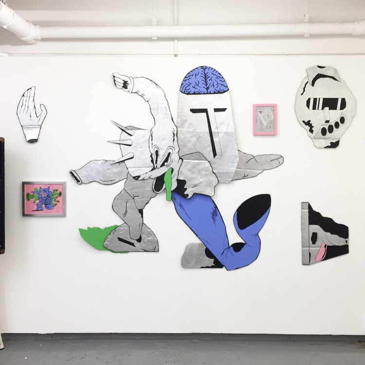
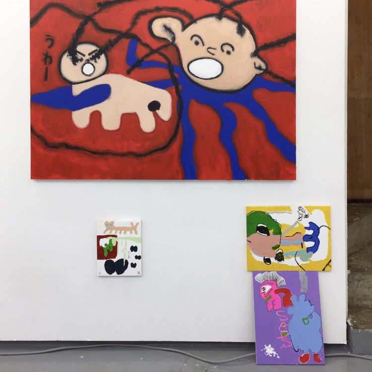
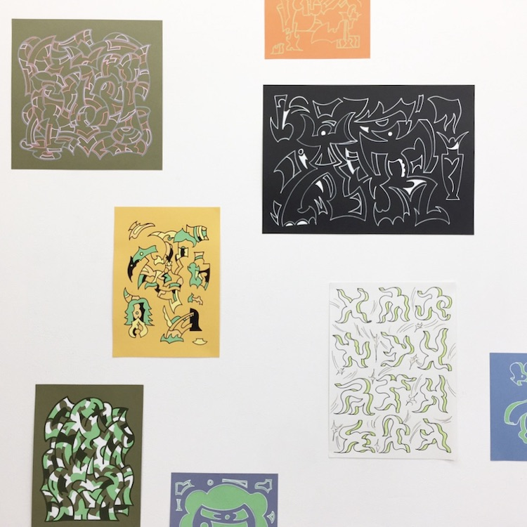
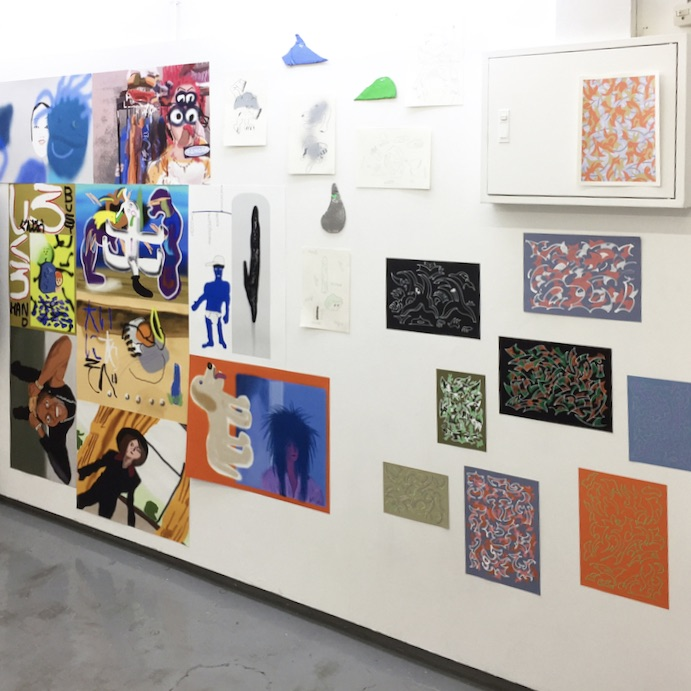
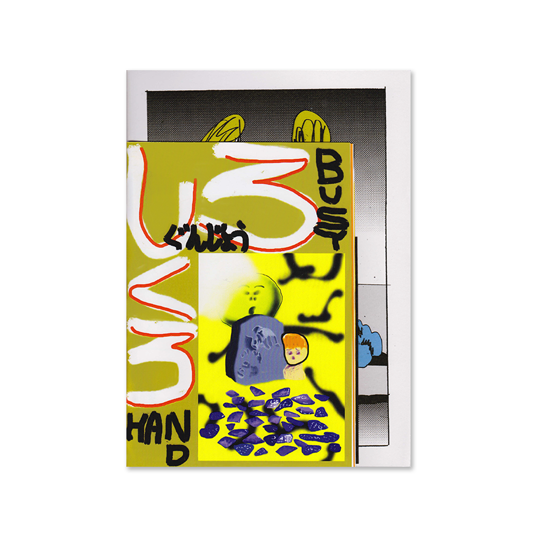
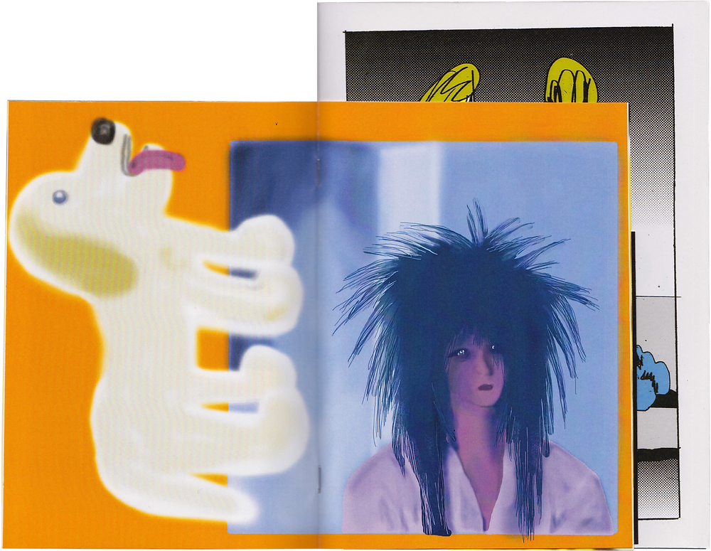
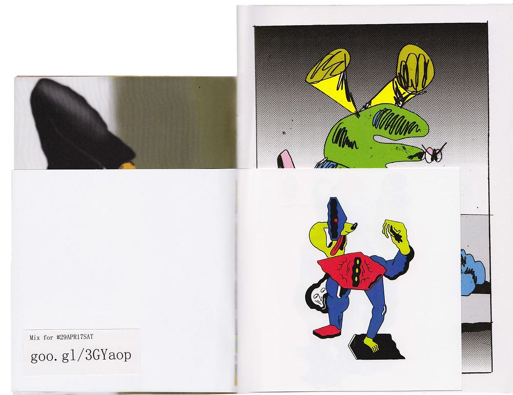
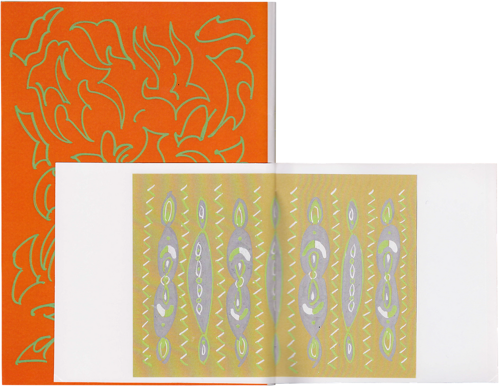
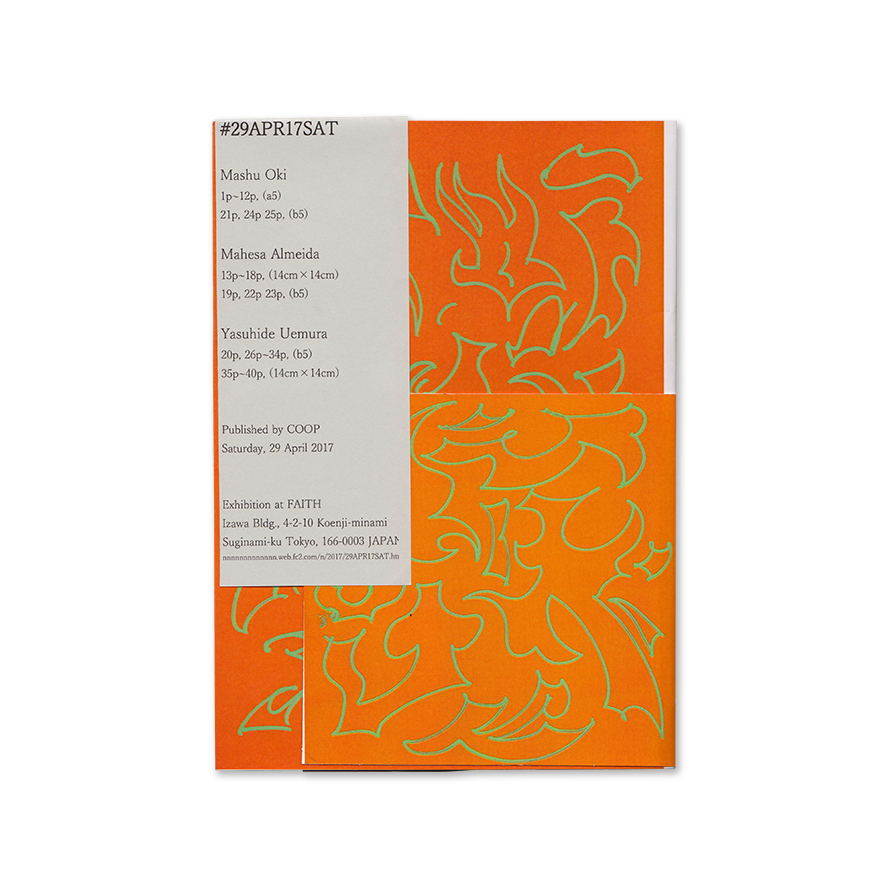

#29APR17SAT
Saturday, 29 April 2017
open: 1 pm / close: 10 pm
*Exhibition
1 pm - 7 pm (entrance free)
*Live / DJ
7 pm - 10pm (charge: 1000 JPN)
Exhibition
1 pm - 7 pm
entrance free
by
Mahesa Almeida
Mashu Oki
Yasuhide Uemura




Live / DJ
start on 7 pm
charge: 1000 JPN
7:00 pm - Suwa Kazuya
7:30 pm - Yasuhide Uemura (DJ)
8:10 pm - Mahesa Almeida
8:50 pm - Mashu Oki (DJ)
9:30 pm - Rockrototante
10:00 pm - End
Catalog / Zine
by
Mahesa Almeida
Mashu Oki
Yasuhide Uemura
Out of Stock




